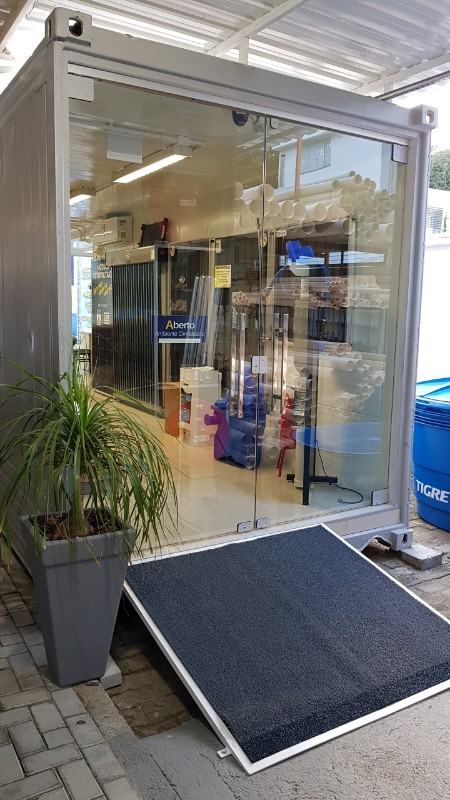

Empresa SOS Encanador
A SOS Encanador nasceu em 1993, com o propósito de tornar-se uma empresa especializada no segmento hidráulico da construção civil.
Uma empresa inovadora, que busca constantemente novos produtos. Hoje a SOS Encanador atua em diversos segmentos ligados a construção e reformas.
Temos uma completa linha de materiais hidráulicos, peças para instalação de gás, louças sanitárias, metais, aquecedores solar e a gás, spas, banheiras, bombas para pressurização, entre outras coisas. Venha nos visitar e conhecer um pouco mais da nossa empresa.
Entre nossos pontos fortes destacamos a parceria com os melhores fabricantes de materiais de construção do Brasil, criando assim um diferencial que é a qualidade dos produtos que comercializa.

Temos uma completa linha de materiais hidráulicos, peças para instalação de gás, louças sanitárias, metais, aquecedores solar e a gás, spas, banheiras, bombas para pressurização, entre outras coisas. Venha nos visitar e conhecer um pouco mais da nossa empresa.
Entre nossos pontos fortes destacamos a parceria com os melhores fabricantes de materiais de construção do Brasil, criando assim um diferencial que é a qualidade dos produtos que comercializa.